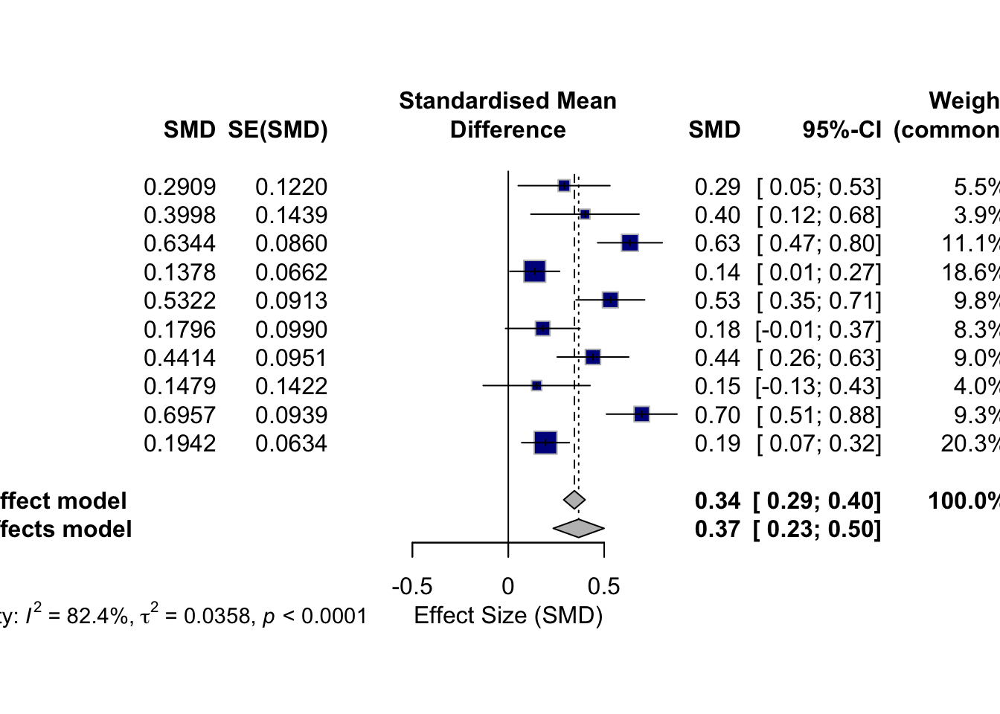

This dashboard allows users to explore a living meta-analysis interactively. Users can visualize meta-analysis plots, filter studies, and explore how study inclusion affects overall effect sizes and heterogeneity.
Data Import and Preparation
# Simulated example of meta-analysis datameta_data <-tibble(study_id =paste("Study", 1:10),effect_size =rnorm(10, mean =0.5, sd =0.2),lower_ci = effect_size -runif(10, 0.1, 0.3),upper_ci = effect_size +runif(10, 0.1, 0.3),sample_size =sample(50:200, 10),analysis_type =sample(c("Change-from-baseline", "End-point", "Self-report", "Clinician-administered"), 10, replace =TRUE),include =TRUE# Column to toggle study inclusion in analysis)# Display the data table for contextmeta_data
# A tibble: 10 × 7
study_id effect_size lower_ci upper_ci sample_size analysis_type include
<chr> <dbl> <dbl> <dbl> <int> <chr> <lgl>
1 Study 1 0.291 0.111 0.589 183 End-point TRUE
2 Study 2 0.400 0.114 0.678 178 Clinician-adminis… TRUE
3 Study 3 0.634 0.405 0.742 147 Self-report TRUE
4 Study 4 0.138 -0.0126 0.247 85 Self-report TRUE
5 Study 5 0.532 0.401 0.759 55 Self-report TRUE
6 Study 6 0.180 0.0263 0.414 95 Clinician-adminis… TRUE
7 Study 7 0.441 0.177 0.550 68 Self-report TRUE
8 Study 8 0.148 -0.119 0.439 145 Clinician-adminis… TRUE
9 Study 9 0.696 0.516 0.884 180 Clinician-adminis… TRUE
10 Study 10 0.194 0.0673 0.316 166 End-point TRUE
Analysis Type Selection
# Create a dropdown menu to select analysis typeselected_analysis <-"All Studies"# Default selectionanalysis_options <-c("All Studies", "Change-from-baseline", "End-point", "Self-report", "Clinician-administered")cat("**Select Analysis Type:**\n")
# Filter studies based on selected analysis typefiltered_data <-if (selected_analysis =="All Studies") { meta_data} else { meta_data %>%filter(analysis_type == selected_analysis)}# Interactive table with checkboxes to select/deselect studiesplotly_table <- plotly::plot_ly(type ='table',header =list(values =names(filtered_data)),cells =list(values =t(filtered_data)))plotly_table
Instructions: Use the table above to review the list of studies included in the meta-analysis. While you can’t toggle studies on this static dashboard, the table allows you to view each study’s information.
Meta-Analysis Calculation
# Filter only included studiesfiltered_data <- filtered_data %>%filter(include ==TRUE)# Perform a random-effects meta-analysismeta_result <- meta::metagen(TE = effect_size, seTE = (upper_ci - lower_ci) /3.92, # Approximation of SE from CIstudlab = study_id, data = filtered_data, sm ="SMD"# Standardized Mean Difference)# Display the meta-analysis resultssummary(meta_result)
SMD 95%-CI %W(common) %W(random)
Study 1 0.2909 [ 0.0518; 0.5300] 5.5 9.1
Study 2 0.3998 [ 0.1178; 0.6819] 3.9 8.1
Study 3 0.6344 [ 0.4658; 0.8029] 11.1 10.6
Study 4 0.1378 [ 0.0081; 0.2676] 18.6 11.4
Study 5 0.5322 [ 0.3534; 0.7111] 9.8 10.4
Study 6 0.1796 [-0.0145; 0.3736] 8.3 10.1
Study 7 0.4414 [ 0.2550; 0.6277] 9.0 10.2
Study 8 0.1479 [-0.1308; 0.4265] 4.0 8.2
Study 9 0.6957 [ 0.5117; 0.8798] 9.3 10.3
Study 10 0.1942 [ 0.0699; 0.3184] 20.3 11.5
Number of studies: k = 10
SMD 95%-CI z p-value
Common effect model 0.3447 [0.2887; 0.4008] 12.06 < 0.0001
Random effects model 0.3669 [0.2341; 0.4997] 5.42 < 0.0001
Quantifying heterogeneity (with 95%-CIs):
tau^2 = 0.0358 [0.0119; 0.1335]; tau = 0.1891 [0.1089; 0.3653]
I^2 = 82.4% [68.8%; 90.0%]; H = 2.38 [1.79; 3.16]
Test of heterogeneity:
Q d.f. p-value
51.02 9 < 0.0001
Details of meta-analysis methods:
- Inverse variance method
- Restricted maximum-likelihood estimator for tau^2
- Q-Profile method for confidence interval of tau^2 and tau
- Calculation of I^2 based on Q
Interactive Forest Plot
# Create the forest plot with meta-analysis resultsmeta::forest( meta_result, studlab =TRUE, xlab ="Effect Size (SMD)", col.square ="darkblue")

Instructions: Use the forest plot above to visualize the effect sizes of the studies. You can hover over points to see the study name, effect size, and confidence intervals.
Interpretation: The I2 value represents the percentage of total variation across studies due to heterogeneity rather than chance. Use this measure to assess the consistency of study results.
Conclusion
This dashboard provides an interactive view of meta-analysis results. While static on GitHub Pages, a more dynamic version could allow users to toggle inclusion of specific studies or adjust filters for sensitivity analyses. For an interactive version, consider hosting on shinyapps.io, Streamlit Cloud, or similar platforms.
Future Enhancements
Add a sidebar filter to toggle study inclusion/exclusion.
Deploy an interactive version via Shiny or Streamlit for real-time updates.
Allow users to upload their own meta-analysis data for analysis.